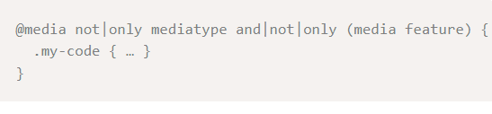
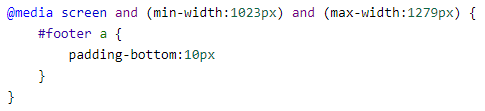

Una media querie es un conjunto de reglas de CSS usadas para hacer que el contenido de una pagina web se adapte a los diferentes tipos de pantalla, resoluciones, orientación y demás situaciones que se puedan presentar mientras se cumplan ciertas condiciones definidas en la programación, como puede ser al pasar de visualizar una pagina en un dispositivo con una pantalla grande a un dispositivo con pantalla pequeña y de menor resolución.
Entre las cosas que se pueden modificar con una media querie están las siguientes:
- Visibilidad de elementos.
- Modificar el tamaño de un texto.
- Modificar el tamaño de una imagen.
- Modificar el margen y el espacio de elementos.
tttrrreeeereee33443
Cuando no existía el uso de las media queries, se tenía que optar por tener dos versiones de una pagina web, una destinada para dispositivos de escritorio y otra diferente para móviles, lo cual por obvias razones era costoso para mantener en funcionamiento estas dos versiones de una misma página. Así que cuando se empezó a usar las media queries este problema era parte del pasado ya que mediante una serie de líneas de código las cuales hicieran que una pagina web se pudiese adaptar sin problema al tamaño tan variado de los dispositivos tecnológicos, resoluciones y orientaciones de dichos dispositivos (Diseño Responsive) y ademas las media queries se comenzaron a implementar por los navegadores en 2012 cando llego el CSS3.
Una media quería siempre comienza con esta sintaxis: @media, agregando una Mediatype.

Se puede agrupar o excluir un mediatype específico haciendo uso de los operadores not y only.
Ejemplos:
Ejecuta el CSS en pantalla a partir de 768 px en adelante.

Ejecuta el CSS en pantalla hasta resoluciones de 420px como máximo.

Ejecuta el CSS para resoluciones entre 1023px y 1280 px.
